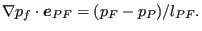
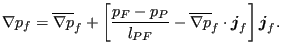
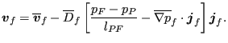

Keyword type: model definition
This option is used to tie two surfaces. It can only be used with 3-dimensional elements (no plane stress, plane strain, axisymmetric, beam or shell elements). There is one required parameter NAME. Optional parameters are POSITION TOLERANCE, ADJUST, CYCLIC SYMMETRY, MULTISTAGE, FLUID PERIODIC and FLUID CYCLIC. The last four parameters are mutually exclusive. CYCLIC SYMMETRY and MULTISTAGE can only be used for structures, FLUID PERIODIC and FLUID CYCLIC can only be used for 3D-fluid calculations. The dependent surface is called the slave surface, the independent surface is the master surface. The user can freely decide which surface is taken as slave and which as master. The surfaces are defined using *SURFACE. Nodes belonging to the dependent surface cannot be used as dependent nodes in other SPC's or MPC's. Only nodes on an axis of cyclic symmetry can belong to both the slave as well as to the master surface.
Default (i.e. in the absense of the CYCLIC SYMMETRY, the MULTISTAGE, the FLUID PERIODIC and FLUID CYCLIC parameter) is a tie of two adjacent surfaces in a structural calculation. This is also called tied contact. In that case MPC's are generated connecting the slave nodes with the master faces, provided the orthogonal distance between the nodes and the adjacent face does not exceed the POSITION TOLERANCE. If no tolerance is specified, or the tolerance is smaller than , a default tolerance applies equal to  of the typical element size. In addition, the projection of the slave node onto the master face must lie within this face or at any rate not farther away (measured parallel to the face) than the default tolerance just defined. For tied contact the slave surface can be a nodal or element face surface, whereas the master surface has to consist of element faces. Nodes which are not connected are stored in file WarnNodeMissMasterIntersect.nam and can be read into CalculiX GraphiX by using the command ``read WarnNodeMissMasterIntersect.nam inp''. Nodes which are connected are automatically adjusted, i.e. the position of the slave nodes is modified such that they lie exactly on the master surface, unless ADJUST=NO was specified by the user. In order to create the MPC's connecting the slave and master side, the latter is triangulated. The triangulation is stored in file TriMasterContactTie.frd and can be visualized using CalculiX GraphiX.
The tie can be assigned a name by using the parameter NAME. This name can be referred to on the *CYCLIC SYMMETRY MODEL card.
The parameter CYCLIC SYMMETRY is used to tie two surfaces bounding one and the same datum sector in circumferential direction. Both the slave and the master surface can be node or face based. For face based surfaces the nodes belonging to the face are identied at the start of the algorithm which generates the cyclic multiple point constraints. For each slave node, a master node is determined which matches the slave node within a tolerance specified by the parameter POSITION TOLERANCE after rotation about the cyclic symmetry axis. The latter rotation is an important aspect: for the purpose of generating cyclic symmetry constraints distances are measured in radial planes through the cyclic symmetry axis. Circumferential deviations do NOT enter the calculation of this distance. A separate check, however, verifying whether the geometry matches the number of sections defined by the user, is performed. For details the reader is referred to *CYCLIC SYMMETRY MODEL. If no tolerance is specified, or the tolerance is smaller than , a default tolerance is calculated equal to times the distance of the master nodes to their closest neighbor. Subsequently, a cyclic symmetry constraint is generated. If no master node is found within the tolerance, the face on the master surface is identified to which the rotated slave node belongs, and a more elaborate multiple point constraint is generated. If none is found, the closest face is taken. If this face does not lie within  of its length from the slave node, no MPC's are generated for this node, an error is issued and the node is stored in file WarnNodeMissCyclicSymmetry.nam. This file can be read into CalculiX GraphiX by using the command ``read WarnNodeMissCyclicSymmetry.nam inp''.
The parameter MULTISTAGE is used to tie two coincident nodal surfaces (no face based surfaces allowed) each of which belongs to a different datum sector. In that way two axially neighboring datum sectors can be tied. In this case, the order in which the user specifies the surfaces is not relevant: the surface belonging to the smallest datum sector is taken as master surface. The larger datum sector should not extend the smaller datum sector by more than once the smaller datum sector, no matter in what circumferential direction (clockwise or counterclockwise). This option should not be used in the presence of network elements.
The parameter FLUID PERIODIC is used to define periodic conditions in 3D-fluid calculations on surfaces which are translated w.r.t. each other. The surfaces must be face-based and match. For cyclic conditions in 3D-fluid calculations on surfaces which are rotated w.r.t. each other the parameter FLUID CYCLIC is used. Here too, the surfaces must be face-based and match. Both parameters require the *CYCLIC SYMMETRY MODEL card to be effective. For 3D-fluid applications it is recommended that at least three element rows separate the master and the slave surface.
The parameter NAME is needed if more than one *TIE constraint is defined. It allows the user to distinguish the tie constraints when referring to them in other keyword cards (e.g. *CYCLIC SYMMETRY MODEL).
Notice that *TIE can only be used to tie ONE slave surface with ONE master surface. It is not allowed to enter more than one line underneath the *TIE card. Furthermore, *TIE cards must not use a name which has already been used for another *TIE.
First line:
Following line:
Example: *TIE,POSITION TOLERANCE=0.01 left,right
defines a datum sector with slave surface left and master surface right, and defines a position tolerance of 0.01 length units.
Example files: segment, fullseg, couette1per, couettecyl4.